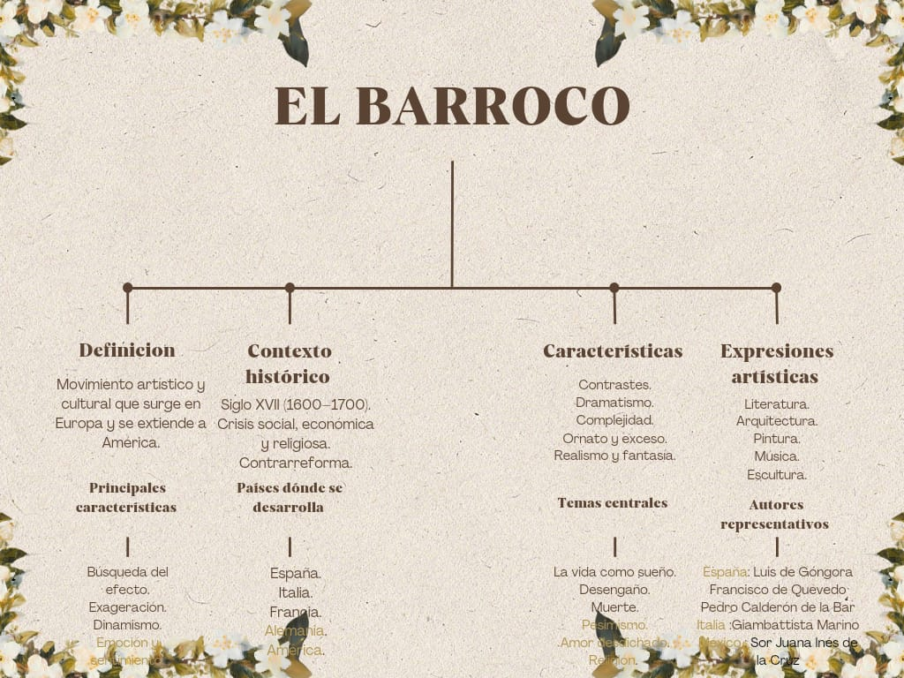
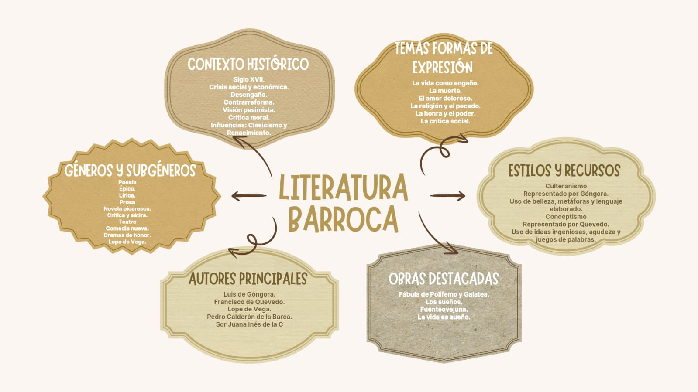
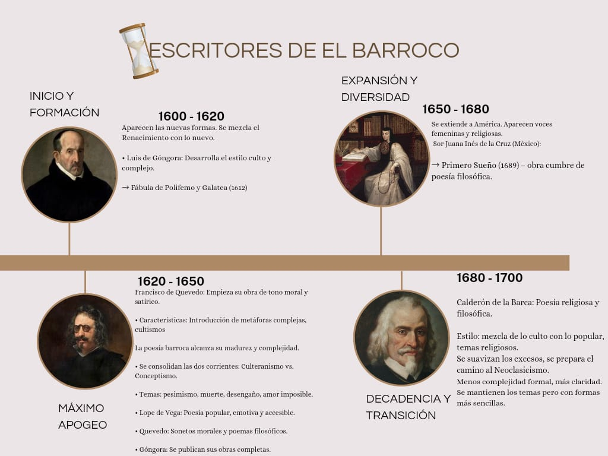

El Barroco
Este mapa conceptual organiza la información de forma jerárquica y lógica. Comienza con el concepto central: El Barroco, definido como un movimiento artístico y cultural que surgió en Europa durante el siglo XVII y que posteriormente se extendió a América.

Profundisacion
Definición
Explica qué es el Barroco y dónde surgió. Se caracteriza por ser un movimiento que influyó en diversas manifestaciones artísticas y culturales.
Contexto históricoPresenta el período en que se desarrolló, marcado por crisis sociales, económicas y religiosas. También destaca la influencia de la Contrarreforma, que impulsó el uso del arte como medio de expresión religiosa y cultural.
Características
Muestra los rasgos principales del Barroco: Contrastes. Dramatismo. Complejidad. Exceso de adornos. Mezcla de realidad y fantasía. Búsqueda del efecto emocional en el público.
4. Expresiones artísticas y temas
Indica las principales artes en las que se manifestó: Literatura. Arquitectura. Pintura. Música. Escultura. También presenta los temas más frecuentes de las obras: La vida como sueño. El desengaño. La muerte. El pesimismo. El amor desdichado. Además, señala a algunos de los autores más representativos del movimiento, como Góngora, Quevedo, Calderón de la Barca, Marino y Sor Juana Inés de la Cruz.
Conclusión
La función del mapa conceptual es mostrar la relación entre las diferentes ideas que conforman el Barroco, facilitando la comprensión de este movimiento artístico y cultural de manera clara y organizada.
Literatura Barroca
Profundisacion
El mapa conceptual presenta de forma organizada los aspectos más importantes de la literatura barroca. Explica que surgió en el siglo XVII, en una época marcada por crisis sociales, económicas y religiosas.

Sus principales temas fueron la vida como un engaño, la muerte, el amor doloroso, la religión y la crítica social. También muestra los dos estilos más importantes: el culteranismo, representado por Góngora, que se caracteriza por el uso de un lenguaje culto y abundantes metáforas; y el conceptismo, representado por Quevedo, basado en ideas ingeniosas y juegos de palabras. Además, señala que la literatura barroca se manifestó en géneros como la poesía, la prosa y el teatro. Finalmente, destaca autores importantes como Góngora, Quevedo, Lope de Vega, Calderón de la Barca y Sor Juana Inés de la Cruz, junto con algunas de sus obras más representativas
Escritores del Barroco
Sus principales temas fueron la vida como un engaño, la muerte, el amor doloroso, la religión y la crítica social. También muestra los dos estilos más importantes: el culteranismo, representado por Góngora, que se caracteriza por el uso de un lenguaje culto y abundantes metáforas; y el conceptismo, representado por Quevedo, basado en ideas ingeniosas y juegos de palabras. Además, señala que la literatura barroca se manifestó en géneros como la poesía, la prosa y el teatro. Finalmente, destaca autores importantes como Góngora, Quevedo, Lope de Vega, Calderón de la Barca y Sor Juana Inés de la Cruz, junto con algunas de sus obras más representativas
